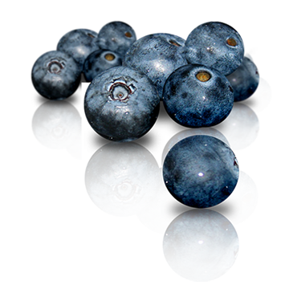

blueberry
left
Черни́ка, или Черника обыкновенная, или Черника миртолистная (лат. Vaccínium myrtíllus) — низкорослый кустарничек, вид рода Вакциниум семейства Вересковые (ранее этот род иногда выделяли в семейство Брусничные). Ягоды съедобны. Ягоды и листья используются в лекарственных целях. Иногда чернику также выращивают в декоративных целях на альпийских горках.
Черни́ка, или Черника обыкновенная, или Черника миртолистная (лат. Vaccínium myrtíllus) — низкорослый кустарничек, вид рода Вакциниум семейства Вересковые (ранее этот род иногда выделяли в семейство Брусничные). Ягоды съедобны. Ягоды и листья используются в лекарственных целях. Иногда чернику также выращивают в декоративных целях на альпийских горках.
Научное название рода происходит от латинского слова vacca — «корова», по пригодности листьев некоторых видов на корм скоту.
Видовое название myrtillus представляет уменьшительное от myrtus — «мирт», по сходству растения с маленьким миртом.
Русское название «черника» произошло от цвета ягод и того, что они чернят руки и рот.
Другие русские названия растения: чернега, чернижник, черница, черничник, чернишник.
Интересно, что название рода кактусов Миртиллокактус (Myrtillocactus) образовано от названия черники (Vaccinium myrtillus) и объясняется внешним сходством плодов этих кактусов и черники. Черника — кустарничек высотой 10—50 см. На севере, в зоне тундры, — несколько сантиметров. Ветви отходят от главного стволика под острыми углами.